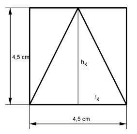

Aufgabe 206 Ein Zylinder hat als Achsenschnitt ein Quadrat mit einer Seitenlänge von 4,5 cm. Welches Volumen V hat der größtmögliche Kegel, der daraus hergestellt werden kann?  hK = 4,5 cm rK = 4,5 cm/2 = 2,25 cm л * rK² * hK л * 2,25² cm² * 4,5 cm V = -------------- = -------------------------- = 23,8 cm³ 3 3